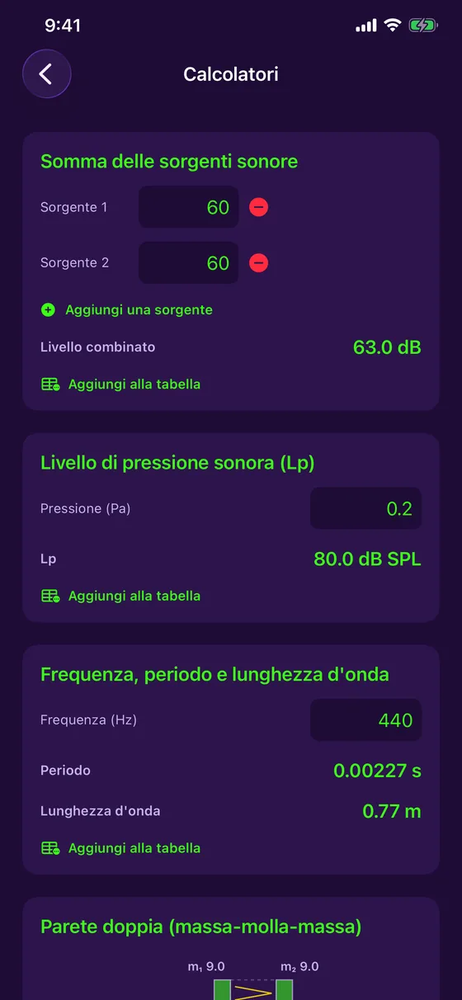

Funzioni
Tutto ciò che serve per misurare e correggere una stanza
Il microfono e la fotocamera dell'iPhone, usati per misurare, calcolare e documentare l'acustica di un luogo — senza uscire dall'app, senza connessione.
Misurare
Gratis: quello che serve per misurare ogni giorno
Fonometro in tempo reale
Livello in dB in tempo reale, con minimo, media e massimo, e due stili di grafico (Festival, Studio).
Calibrazione del microfono
Confronta con un fonometro di riferimento e regola: ogni misura indica se è calibrata o stimata.
Analizzatore di spettro
Analisi delle frequenze in tempo reale (FFT) e classificazione del suono: puro, complesso o rumore.
Tono puro
Per un tono puro, frequenza, periodo e lunghezza d'onda sono calcolati per te.
Storico a colori
Ogni sessione viene salvata con la sua curva: verde, giallo o rosso secondo il livello.
Tabella delle misure
Il registro di tutte le tue misure, con filtro, ordinamento ed esportazione in report PDF con grafici.
In dettaglio
Ogni strumento, da vicino
Accordatore
Accorda a orecchio, o lascia fare all'ago.
- Chitarra (5 accordature), ukulele (anche Sol grave e baritono), violino, viola, violoncello, mandolino e banjo
- Modalità cromatica per la voce e qualsiasi nota
- Ago con cent in tempo reale e una scala di accordatura fine di ±10 cent, con vibrazione quando è intonato
- Lettura stabilizzata che ignora le misure anomale, con indicatore del livello del segnale
- Frequenza di riferimento regolabile da 430 a 450 Hz, e gratuito

Fonometro, calibrazione e storico
Il fonometro più semplice da aprire sul campo.
- Livello in tempo reale, minimo, media e massimo
- Calibrazione del microfono con uno strumento di riferimento, con lo stato di calibrazione annotato su ogni misura
- Storico delle sessioni con la loro curva a colori
- Condividi l'immagine o aggiungila alla tabella delle misure

Riverbero per frequenza
Sapere dove la stanza ha un problema, non solo se ce l'ha.
- RT60 per banda d'ottava, da 125 Hz a 4 kHz, rispetto all'obiettivo del tuo uso (ufficio, studio, sala riunioni, home cinema)
- Le bande sopra l'obiettivo sono segnalate, con un consiglio per i bassi
- Curve di assorbimento di ogni materiale della stanza, tra 10 materiali
- Modello di Sabine e coefficienti tipici: una stima indicativa

Dalla scansione alla schiuma da aggiungere
Scansiona la stanza e lascia fare i conti all'app.
- Su iPhone Pro (LiDAR), una passata compila le dimensioni e la superficie di ogni parete
- Senza LiDAR, inserisci le dimensioni a mano: tutto il resto funziona
- Schema 3D isometrico della stanza, riportato nella tabella e nel report PDF
- La quantità di schiuma acustica da aggiungere per raggiungere l'obiettivo
- Misura dell'RT60 in tempo reale con un breve burst di rumore

Mappa del rumore
Vedere a colpo d'occhio dove una stanza è rumorosa.
- Tocca la pianta della stanza e misura cinque secondi in ogni punto
- Mappa di calore delle zone calme e rumorose
- Livello più calmo, media (Leq) e livello più rumoroso
- Salvata nella tabella delle misure e nel report PDF

Calcolatori acustici
Le formule del mestiere, senza carta né calcolatrice.
- Somma di sorgenti sonore: quanti dB insieme
- Livello di pressione sonora a partire dalla pressione in pascal
- Frequenza, periodo e lunghezza d'onda
- Ogni risultato si aggiunge alla tabella con un tocco

Doppia parete
Stimare l'isolamento di una parete prima di costruirla.
- Calcolo massa-molla-massa a partire dalla massa di ogni lastra e dalla profondità dell'intercapedine
- Frequenza di risonanza e isolamento per banda d'ottava
- Con o senza lana minerale, e lastre disaccoppiate come opzione
- Stima indicativa, non un indice Rw/STC certificato

Tabella delle misure e report PDF
Tutto ciò che misuri resta in ordine e condivisibile.
- Ogni misura viene aggiunta a una tabella centrale, filtrabile per tipo
- Report PDF con grafici e schema 3D della stanza
- Salva un grafico in Foto o condividilo con gli strumenti di iOS
- Tutto resta sul tuo dispositivo: nessun account, nessun server

Gratis o Acoustic Detector Completo
| Gratis | Completo | |
|---|---|---|
| Fonometro in tempo reale e calibrazione | ✓ | ✓ |
| Analizzatore di spettro | ✓ | ✓ |
| Accordatore | ✓ | ✓ |
| Tabella delle misure ed esportazione PDF | ✓ | ✓ |
| RT60 della stanza e schiuma da aggiungere | — | ✓ |
| RT60 per banda d'ottava e assorbimento | — | ✓ |
| Scansione LiDAR della stanza | — | ✓ |
| Mappa del rumore | — | ✓ |
| Calcolatori e doppia parete | — | ✓ |
«Acoustic Detector Completo» è un acquisto singolo di 4,99 CA$, senza abbonamento.
Pronto ad ascoltare la tua stanza?
Acoustic Detector è disponibile sull'App Store, per iPhone. Gratis, con un acquisto singolo facoltativo.
Scarica dall'App Store